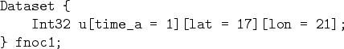
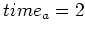
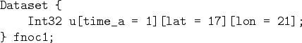
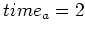
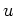

The Data Delivery Mechanism consists of libraries with which users re-link their programs as well as stand alone utilities built at least partially from those libraries. URLs are used verbatim by the data delivery components of DODS. The URL is passed to the server or translator using the API open call (e.g., ncopen()). The client library stub is responsible for removing the envelope of the URL and sending either the path or embedded URL to the correct host/server or host/translator.
When a user wants to access data via a DODS server they must give to a client (i.e., a program linked with one of the DODS reimplemented API libraries) A URL which references that data. Users may choose to supply a constraint along with that URL effectively limiting the parts of the data set that the client can see. For example, suppose a data set exists which contains several arrays:
The user can refer to the entire dataset using a URL without a constraint
expression;
http://dods.gso.uri.edu/cgi-bin/nc/data/fnoc1.nc. If the user were to
specify this, then the client-library will receive from the server a DDS like
the one in Figure  . However, if the user knows that they
only want to work with a small part of the data set they can supply a
constraint expression along with the URL. For example, suppose that the
user only wants the latitude and longitude values for , and
furthermore that they are only interested in the array . They could supply
the user program with the following URL:
http://dods.gso.uri.edu/cgi-bin/nc/data/fnoc1.nc?u[2:2][1:17][1:21]
The
user program will receive DDS in Figure
. However, if the user knows that they
only want to work with a small part of the data set they can supply a
constraint expression along with the URL. For example, suppose that the
user only wants the latitude and longitude values for , and
furthermore that they are only interested in the array . They could supply
the user program with the following URL:
http://dods.gso.uri.edu/cgi-bin/nc/data/fnoc1.nc?u[2:2][1:17][1:21]
The
user program will receive DDS in Figure  . For program which
are designed to read the entire dataset without user interaction this is a
powerful additional feature.
. For program which
are designed to read the entire dataset without user interaction this is a
powerful additional feature.
However, constraint expressions have a second use in DODS. They are used by the reimplemented APIs to extract specific parts of a data set when that is requested by the user program. Many APIs provide features which make it possible to write software which opens a data set, presents the user program with a collection of variables and then provides a way for the program to read one or more of those variables. In an API reimplemented for DODS, those calls must all be satisfied by information the API receives from a DODS server.
In order for the API to get information about the data set2 the API must synthesize various URLs using the one given by the user as a base. For example, to get the DDS of the data set referenced by http://dods.gso.uri.edu/cgi-bin/nc/data/fnoc1.nc the reimplemented API must append the suffix .dds (e.g., http://dods.gso.uri.edu/cgi-bin/nc/data/fnoc1.nc.dds. Similarly, the DAS of that data set is obtained by appending .das.
Getting data is a bit more work than getting the DAS or the DDS. The request for a particular variable must be translated into a DODS constraint expression. This constraint expression is then appended to the URL given by the user and then the suffix .dods is appended to that. For example, suppose the user program makes an API function call requesting the value of the array in the preceding figures. What the API is supposed to return is the values of the entire array , but no other values. The reimplemented API would build the URL http://dods.gso.uri.edu/cgi-bin/nc/data/fnoc1.nc?u.dods where the  specify that the variable is to be the only variable in the projection and the .dods selects the data filter from the DODS server. For more information on the constraint expression syntax, see DODS--Data Access Protocol; for more information on the DODS data servers, see DODS--Data Delivery Design.